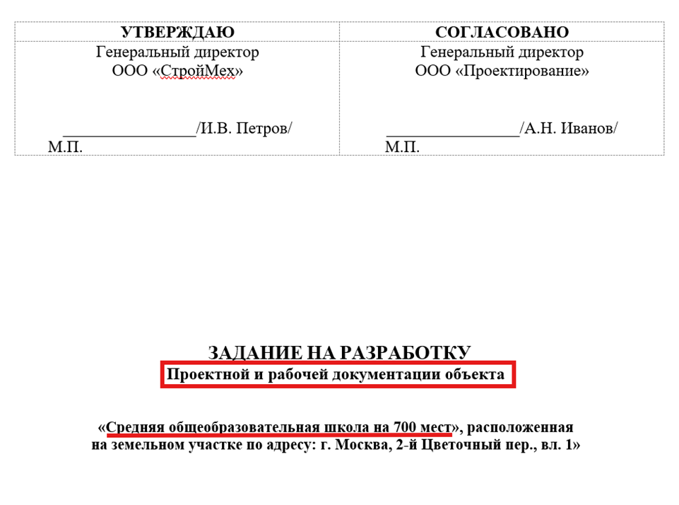
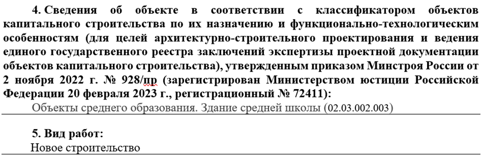
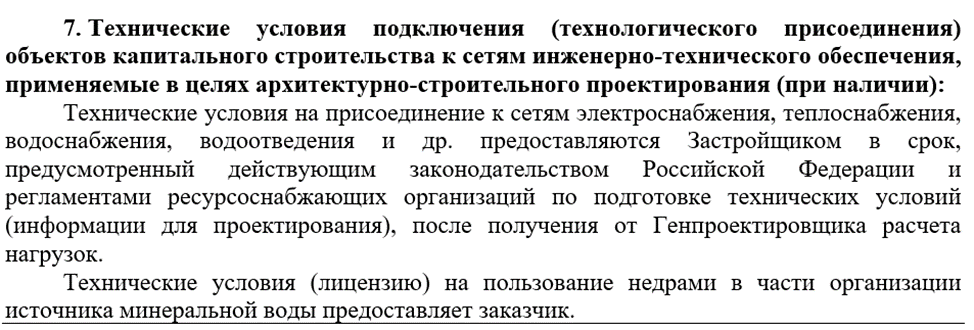
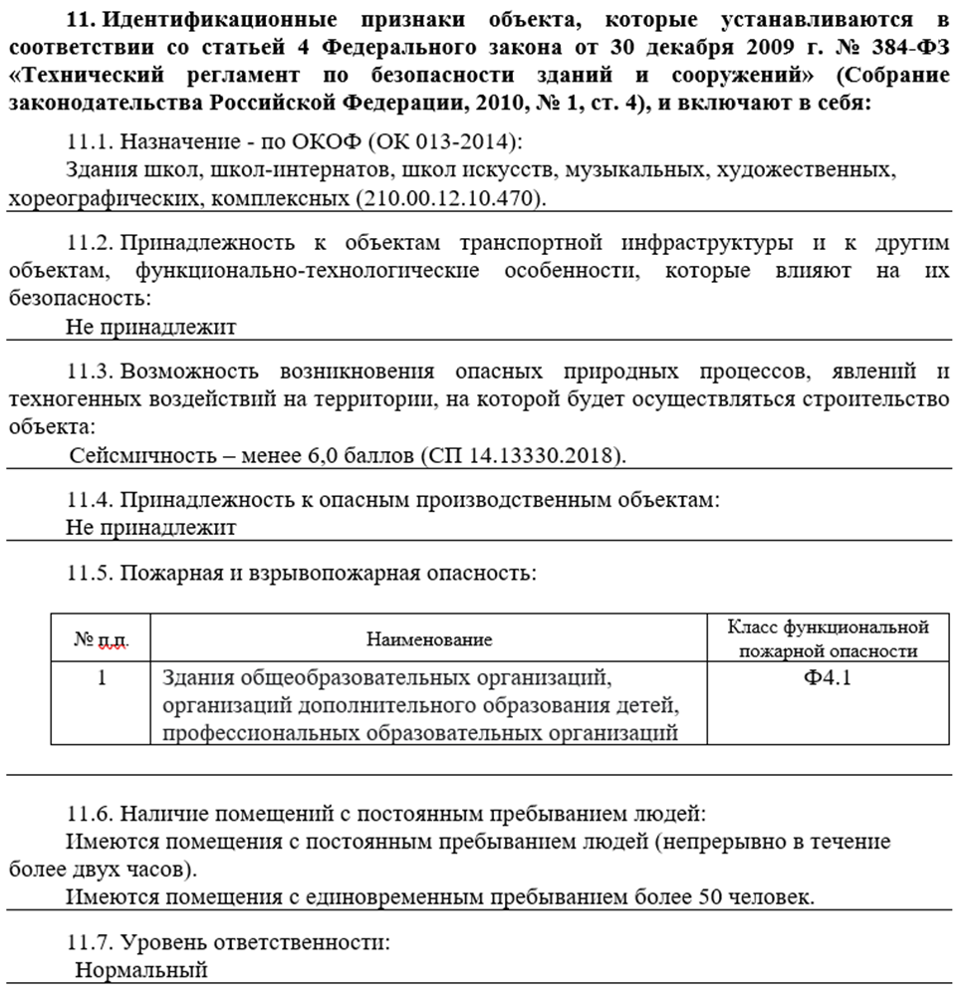
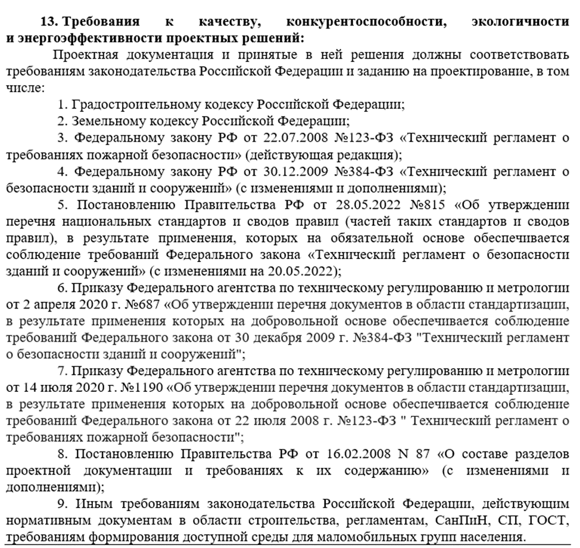
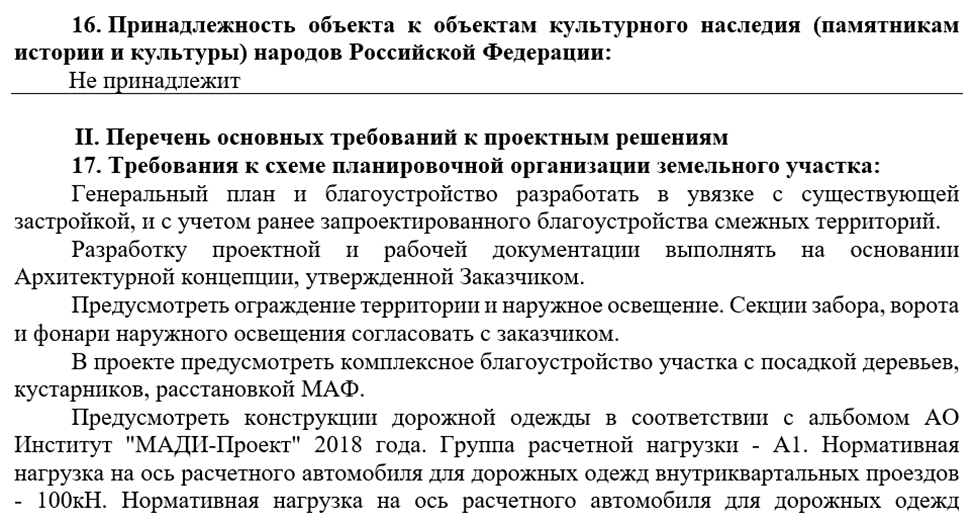
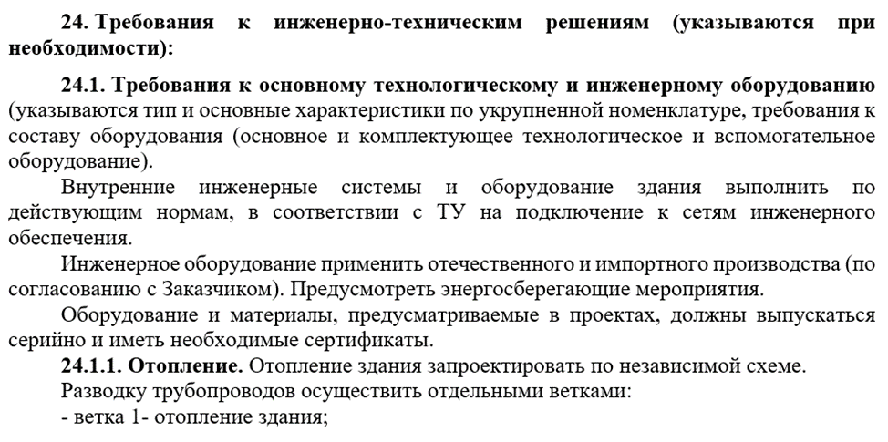
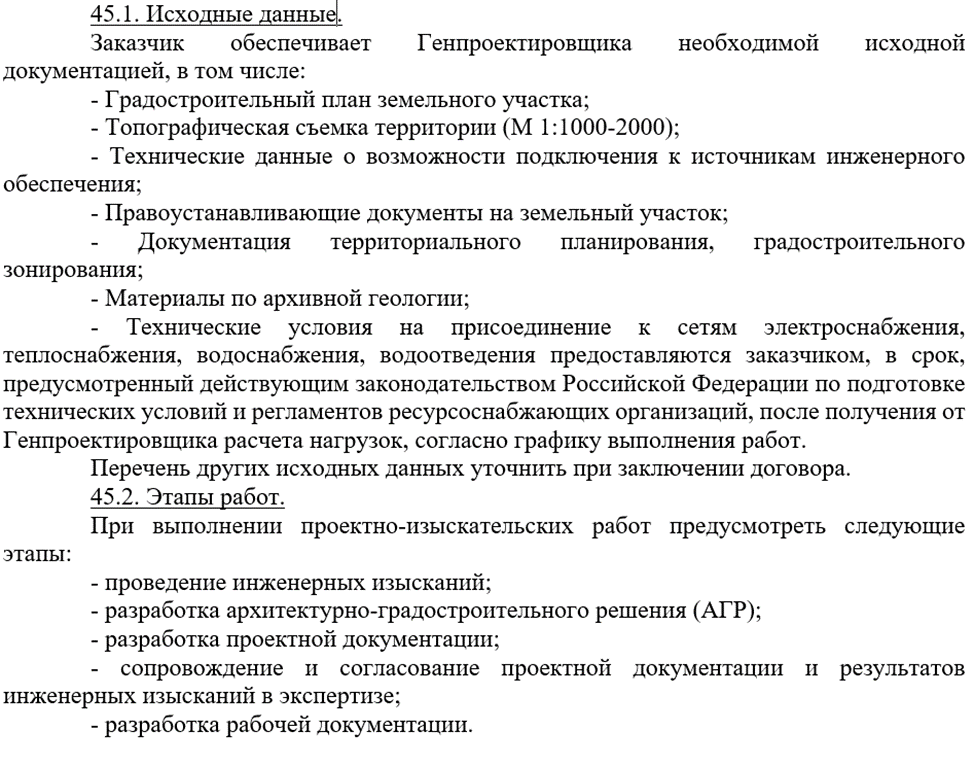
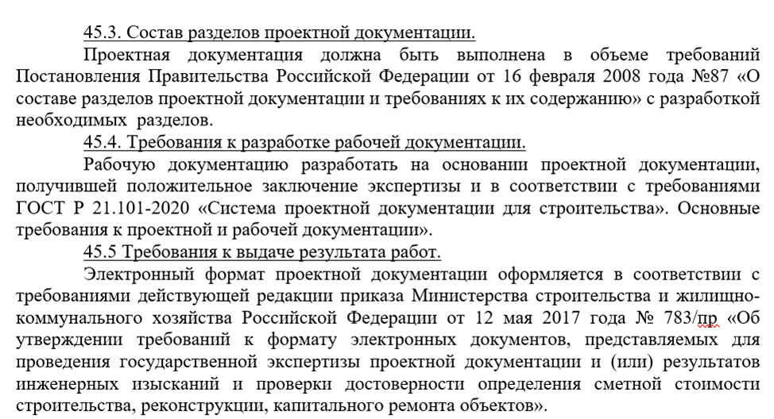
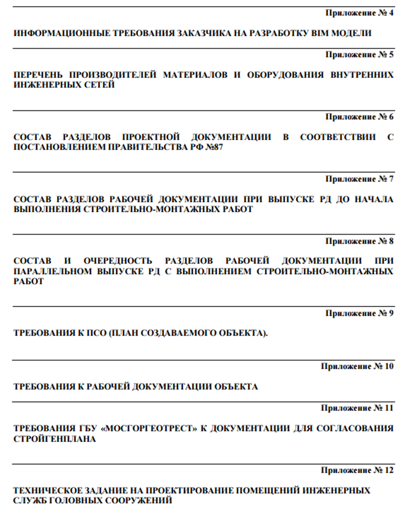

Анализ задания на проектирование или с какой стороны подойти к проекту

Каждый хороший проект начинается с продуманного подхода и грамотного проектирования. Рассмотрим основные компоненты, которые влияют на качество проекта и делают его успешным.
Все мы знаем про громкие, успешные проекты архитекторов, конструкторов, их имена упомянуты в истории. Но мало слов о тех, кто благоустроил эти проекты, сделал их пригодными для жизни – рассчитал сколько и какого нужно света, определил как должна проходить вентиляция, чтобы всегда был комфортный климат в помещении, в конце концов, сделал так, чтобы открыл кран – и сразу пошла горячая вода. А ведь всё это – именно проектировщики.
На сегодняшний день инженеры очень ценные кадры. Проектировщики делают то, что не видно глазу, но без этого наша жизнь сегодня не представляется возможной. Умный свет, счетчики, которые передают показания автоматически и даже светофоры, которые сами регулируют время переключения на основе анализа движения – всё это благодаря представителям данной профессии.
К сожалению, такие ситуации очень часто случаются, поэтому сразу научимся ориентироваться в них самостоятельно.
Итак, самый первый и важный этап в начале работы с объектом – это изучение и анализ задания на проектирование.
Задание на проектирование или сокращенно ЗнП - это четкая постановка задач, целей и требований для достижения планируемого результата. Оно является основным документом сторон после договора. Главным документом в техническом задании на проектирование является приказ Минстроя от 01.03.2018 № 125/пр. В нём описаны все требования, предъявляемые к документации, полный перечень, сроки выполнения.
Представьте:
- Капитан корабля не может плыть без карты.
- Врач не может лечить без обследований.
- А вы, инженер, не можете проектировать без ЗнП.
Рассмотрим пошагово, какие сведения из ЗнП нам пригодятся.
Шаг 1. Обращайте внимание на титульный лист ЗнП — в нем сразу указано, какую документацию необходимо разработать и для какого объекта.

Шаг 2. Далее также указан тип объекта проектирования и выделяем для себя – вид работ. Какие есть виды работ рассматривали в предыдущем уроке.

Шаг 3. Определите наличие технических условий. При проектировании инженерных систем необходимо понять будете ли Вы подключаться к другим сетям. Например, в школе внутренние электрические сети подключают к наружным, соответственно, Вам необходимы будут для разработки своего проекта технические условия (ТУ) на присоединение к внешним электросетям.

Шаг 4. Изучите идентификационные признаки безопасности объекта. Это поможет определить нужно ли применять специальные требования и условия проектирования, а также является ли объект ОПО.

Шаг 5. Проанализируйте нормативные документы, которые указаны в задании. Необходимо строго соблюдать их требования при принятии проектных решений.
В ЗнП, приведенном на картинке нормативные документы приведены в скудном объёме. Если Вы можете повлиять на то, чтобы составить список конкретных документов, по которым будет разрабатываться документация, то обязательно это сделайте. Очень важно фиксировать всю информацию, чтобы у проектировщика, заказчика и экспертизы было чёткое понимание на что опирались при проектировании и какие требования были соблюдены.

Шаг 6. Определите относится ли объект к объектам культурного наследия, так как для них действуют особые условия проектирования. А также изучите основные требования к проектным решениям.

Шаг 7. Изучите требования ко всему проекту, уделите большое внимание инженерно-техническим решениям и особенно своему разделу.

При анализе ЗнП изучайте требования не только к своему разделу.
Обращайте внимание также на требования к Архитектурно-планировочным и объемно-конструктивным решениям для понимания структуры проекта и какой объект должен получиться в целом. Также некоторая информация пригодится вам для расчета. Например, при расчете теплопотерь для отопления используется информация по габаритам окон.
Шаг 8. Внимательно изучите исходные данные для проектирования и их достаточность, при обнаружении нехватки какой-либо информации сразу же сообщайте об этом своему руководителю официально (по электронной почте). Также изучите этапы работ, которые предстоит выполнить.

Шаг 9. Уточните состав разделов и требования к выдаче результатов, они также должны быть прописаны в задании на проектирование.

Шаг 10. Изучите все приложения к ЗнП, обычно там прикладывают календарный график выполнения работ и передачи результатов, а также иные требования заказчика к документации, например, требования к информационной модели.

Важно изучить ЗнП тщательно в самом начале и задать имеющиеся вопросы сразу, если возникают сомнения, вопросы или предложения лучше сразу их озвучить и не бояться показаться глупым. Ведь речь идёт о качественном и безопасном проектировании. Кто знает, может Ваш глупый вопрос, заданный сегодня, спасет сотни жизней людей через десятки лет.